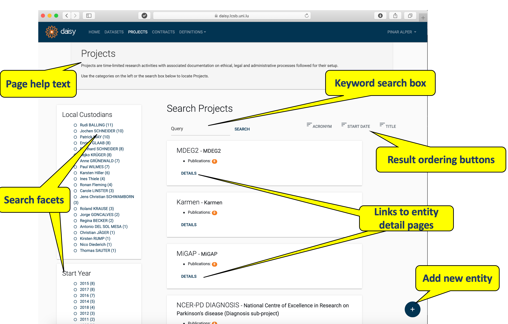
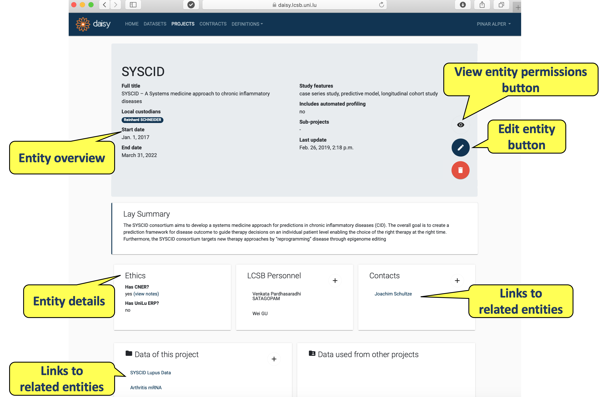
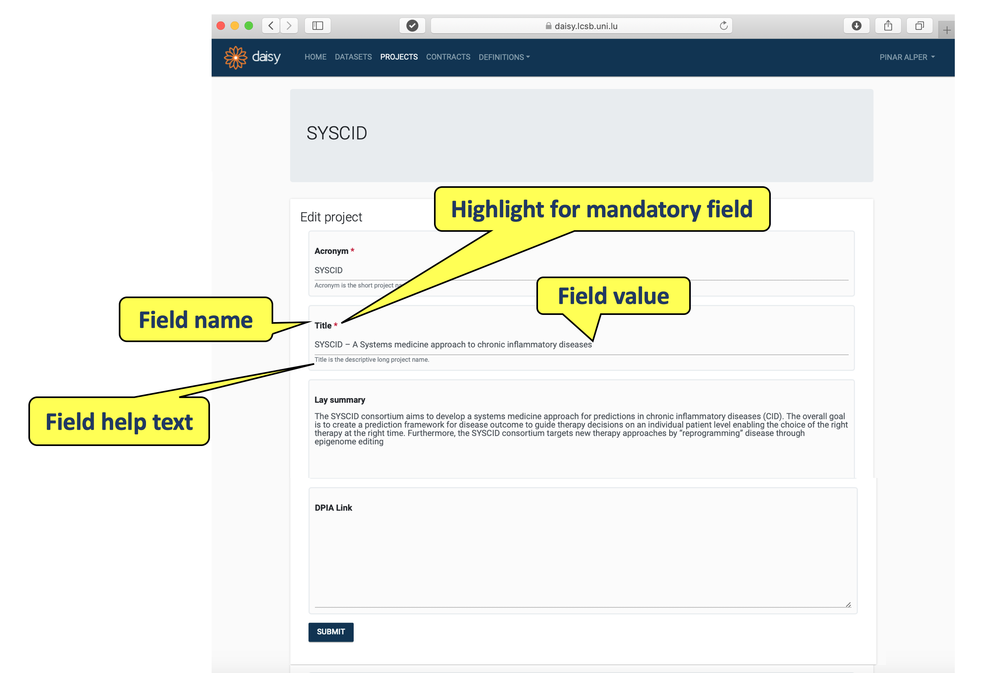
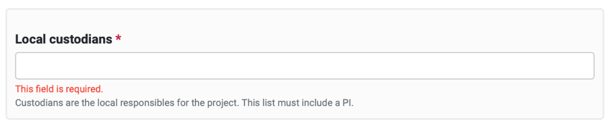
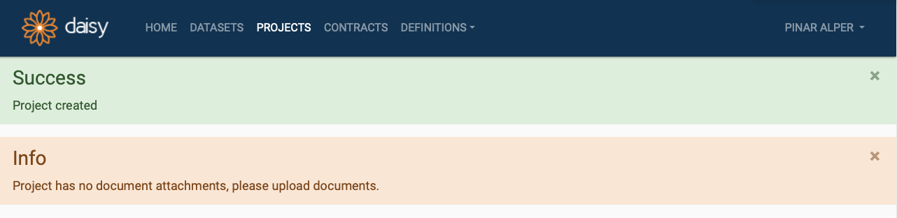

2 DAISY Interface Conventions¶
The main view of each DAISY module is called Search Page, where you choose entity you are interested in (or create a new module). You can inspect a particular entity details in Entity Details Pages and edit them in Entity Editor Pages.
2.1 Search Pages¶
DAISY provides search pages for all entities manageable via modules. Currently these modules are: Datasets, Projects, Contracts and under Definitions: Cohorts, Partners, Contacts. All search pages have similar layout and operational conventions. Search pages are also the only entry point for the functions in a module. When you select a module from the menu bar, you will be taken to the search page for the entity managed by that module.
As an example, the screenshot of the search page for Projects is given below. Each search page is headed with the help text containing a brief description. On the left hand side of the page there are search facets and on the right - the search results are displayed.

Search page for ProjectsBy default, all entities (in our example - projects) will be listed on the search page. The list can be filtered by either selecting one or more facet from the left hand side or by typing in a keyword into the search box. Note that currently DAISY search does not support partial matching. Instead, the entire keyword will be matched in a case insensitive manner.
On the top right section of search results a few attributes are listed. Clicking on these attributes repeatedly will respectively (1) enable the ordering; (2) change order to ascending/descending; (3) disable ordering for the clicked attribute.
Each entity listed in the search results is displayed in a shaded box, containing few of its attributes. In our example these are the project's name and the number of publications. Each result box will also contain a DETAILS link, through which you can go to the Entity Details Page.
Depending on the permissions associated with your user type, you may see a add button (denoted with a plus sign) at the bottom right section of the search page. You can add a new entity by clicking the plus button, which will open up an empty editor form for you to fill in.
2.2 Entity Details Pages¶
Clicking the DETAILS button in the search result box takes you to Details Page, which contains the information about the chosen entity. An example of details page for Project named 'SYSCID' is given below.

Details page of a Project in DAISYYou may end up on an Entity Details Page through:
- the DETAILS link of a search results in a search page.
- the links on details pages of other (linked) entities in DAISY.
Each Details Page is headed with an entity overview box listing some of the entity's attributes (e.g. local custodians, start date) and allows to modify the entity. Depending on users permissions (see users groups) in the right bottom corner of the overview box you may see:
- permissions button (denoted with an eye icon),
- edit entity button (denoted with a pencil icon),
- remove entity button (denoted with a bin icon).
Each Details Page is headed with an overview box listing some of the entity’s attributes. Depending on the permissions associated with your user type, you may see an edit entity button (denoted with a pencil icon) and an permissions button (denoted with an eye icon). These will take you to the Entity Editor Page and the Permissions Management Page respectively.
Beneath the entity overview box there are several information boxes, which display the further details of the entity (e.g. personnel, ethics).
If you have edit permissions for the entity, then at the top right corner of particular detail boxes you will see an add detail button (denoted with a plus sign). Via this button you can do the following:
- create links to other entities e.g. link contacts with projects.
- create (inline) detail records to the current entity e.g. one or more publications to a project.
2.3 Entity Editor Pages¶
When you click the edit button on the Details Page of an entity, you will be taken to the Editor Page containing a form for entity update. An example of editor form is given below.

Editor page of a ProjectEach field in the form is be listed with a name, a value and a help text. Names of the fields that are required to have a value, are marked with a red asterisk (e.g. Title).
Editor forms can be saved by pressing SUBMIT button at the bottom of the page. The forms will be validated upon the submission. If the validation fails for one or more fields, these will be highlighted with inline validation error message, illustrated below.

Field validation error messageUpon successful submission of a form, you will be returned to the Entity Details page. DAISY may give success and/or warning messages upon the form submission; these will be displayed at the top of the page, as illustrated below.

Status message displayed in DAISY